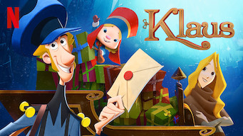

Klaus é um filme infantil da Netflix lançado em 2019 com 1h 37m de duração que foi dirigido porSergio Pablos.
Jesper é um jovem de família acomodada a quem seu pai, responsável pelo serviço de correios, trata de converter num homem de proveito inscrevendo na academia postal.
Apesar disso segue mostrando uma atitude apática e se nega a aprender o oficio, pelo que seu pai decide o destinar a Smeerenburg, capital de uma remota ilha do círculo polar ártico, para abrir um escritório de correios.
Além de ir ali na contramão de sua vontade, impõe-se-lhe uma missão: deverá entregar 6.000 cartas num ano ou caso contrário.
Klaus um lenhador solitário de bom coração encontra o desenho de um menino entristecido porque seu pai não deixa sair de casa, procura Jesper e lhe obriga a entregar um presente misterioso pela noite: uma rã de brinquedo que tinha em seu armazém.
Depois de receber o adorável presente do Sr. Klas, as crianças do povo visitam o carteiro pedindo mais brinquedos e Jesper aproveita para impulsionar o envio de cartas que lhe permitam conseguir seu objetivo, utilizando tanto os presentes de Klaus como os ensinos de Alva.
Os atos de gentileza que se sucedem acaba transformar o povo inteiro, ainda que os líderes dos clãs enfrentados querem impedir eles.

Diretor de cinema Traduzido do inglês- Sergio Pablos é um animador, diretor e roteirista espanhol. Enquanto estava no comando de sua empresa, Pablos desenvolveu vários conceitos para filmes de animação, principalmente as ideias originais nas quais Meu Malvado Favorito e Pé Pequeno foram baseados